Veritalex · Approved MVP design package
A personal place to read. A complete state map, grayscale phone wireframes and a simulated walkthrough. Polished Stitch exports appear alongside the states they represent. This package contains design artifacts; it does not run real account, catalogue or sync services.
Open design prototype Stitch exports Wireframe boards Review clarity refinements Handoff notes Transition map State manifest 88 distinct screen states 437 declared transitions 12 related boards 25 available Stitch references 412 dp · compact 360 dp
Browse every state Search screens AreaAll areas Account Auth Book Explore Home Journal Library Reader Settings Shelves Sync StateAll states after-removal base bookmark cancelled completion conflict current dialog downloaded empty error expired failed filtered first-use highlight immersive in-progress loading local offline paged picker progress restoring saved scroll selection sheet success syncing validation waiting
Stitch export available 01 · Auth · base
A little space to read auth-welcome02 · Auth · loading
Connecting to Google auth-loading03 · Auth · cancelled
You’re still welcome here auth-cancelled04 · Auth · error
Couldn’t sign in auth-errorStitch export available 05 · Auth · base
Add guest reading? auth-import-preview06 · Auth · progress
Adding your reading auth-importing07 · Auth · success
Guest reading added auth-import-complete08 · Home · first-use
Home home-firstStitch export available 09 · Home · base
Home home-returningStitch export available 10 · Explore · base
Explore explore-browse11 · Explore · base
Search books explore-search12 · Explore · base
Search results explore-results13 · Explore · sheet
Filter books explore-filters14 · Explore · empty
No matching books explore-empty15 · Explore · loading
Searching the catalogue explore-loading16 · Explore · offline
Explore is offline explore-offlineStitch export available 17 · Book · base
Book details book-new18 · Book · saved
Book details book-saved19 · Book · in-progress
Book details book-reading20 · Book · progress
Downloading book book-downloading21 · Book · error
Download interrupted book-download-failed22 · Book · downloaded
Ready to read book-downloaded23 · Book · error
Book can’t be opened book-unreadableStitch export available 24 · Library · base
Library library-books25 · Library · filtered
Library library-want26 · Library · filtered
Library library-reading27 · Library · filtered
Library library-finished28 · Library · filtered
Library library-downloaded29 · Library · empty
Library library-empty30 · Library · sheet
Book actions library-actions31 · Library · dialog
Remove this book? library-remove32 · Library · sheet
Your rating library-ratingStitch export available 33 · Shelves · base
Library shelves-list34 · Shelves · empty
Library shelves-empty35 · Shelves · base
Create shelf shelf-create36 · Library · after-removal
Library library-after-removal37 · Shelves · validation
Create shelf shelf-name-error38 · Shelves · base
Rename shelf shelf-rename39 · Shelves · dialog
Delete this shelf? shelf-delete40 · Shelves · sheet
Add to shelves shelf-membership41 · Shelves · base
Classics shelf-detail42 · Shelves · empty
Classics to revisit shelf-detail-emptyStitch export available 43 · Journal · base
Library journal-all44 · Shelves · after-removal
Library shelves-after-delete45 · Journal · base
Book journal journal-book46 · Journal · empty
Library journal-empty47 · Journal · empty
Book journal journal-book-empty48 · Journal · base
Journal entry journal-view49 · Journal · base
New journal entry journal-create50 · Journal · base
Edit journal entry journal-edit51 · Journal · dialog
Delete this entry? journal-delete52 · Journal · dialog
Discard your changes? journal-discardStitch export available 53 · Reader · scroll
Pride and Prejudice reader-scroll54 · Reader · immersive
Pride and Prejudice reader-immersive55 · Reader · paged
Pride and Prejudice reader-paged56 · Reader · bookmark
Pride and Prejudice reader-bookmark57 · Reader · selection
Pride and Prejudice reader-selection58 · Reader · highlight
Pride and Prejudice reader-highlightStitch export available 59 · Reader · sheet
Reading appearance reader-appearance60 · Reader · base
Contents reader-contents61 · Reader · base
Search in book reader-search62 · Reader · base
Search in book reader-search-results63 · Reader · empty
Search in book reader-search-empty64 · Reader · completion
The end reader-finishedStitch export available 65 · Settings · base
Settings settings-main66 · Settings · base
Appearance settings-appearance67 · Settings · base
Reader defaults settings-reader-defaultsStitch export available 68 · Settings · base
Downloaded books settings-storage69 · Settings · dialog
Remove downloaded text? settings-storage-confirm70 · Settings · base
About Veritalex settings-aboutStitch export available 71 · Account · base
Account & sync account-details72 · Account · dialog
Before you sign out account-signout-pending73 · Account · dialog
Delete your account? account-delete-confirm74 · Settings · empty
Downloaded books settings-storage-empty75 · Account · base
Verify it’s you account-reauth76 · Account · progress
Deleting your account account-deleting77 · Account · error
Deletion wasn’t confirmed account-delete-error78 · Account · success
Account deleted account-deleted79 · Sync · local
Account & sync sync-local80 · Sync · waiting
Account & sync sync-waiting81 · Sync · syncing
Account & sync sync-syncing82 · Sync · current
Account & sync sync-current83 · Sync · failed
Account & sync sync-failed84 · Sync · expired
Account & sync sync-expired85 · Sync · restoring
Account & sync sync-restoringStitch export available 86 · Sync · conflict
Choose where to continue sync-conflict87 · Shelves · picker
Add books to shelf shelf-add-books88 · Journal · picker
Choose a book journal-book-pickerNo matching states. Clear the search or choose another area.
Bespoke Stitch reference screens These generated reference compositions are distinct from the complete manifest-based light state designs linked on every screen card.
Refresh Stitch references Showing files bundled at build time.
UI-01 Home - Veritalex light · MOBILE
UI-02 Book details - Veritalex light · MOBILE
UI-03 Reader - Veritalex light · MOBILE
UI-04 Library - Books - Veritalex light · MOBILE
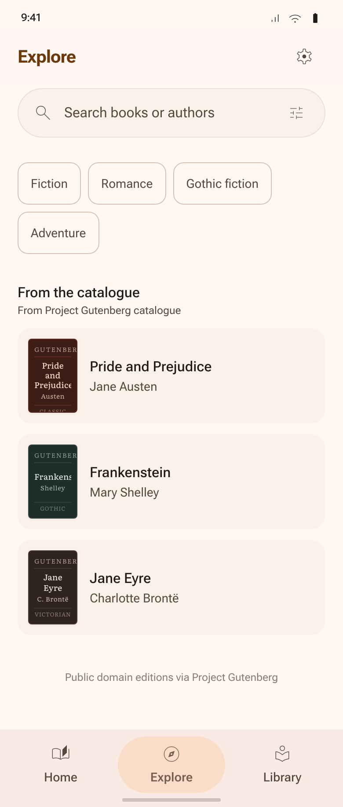
UI-05 Explore - Veritalex light · MOBILE
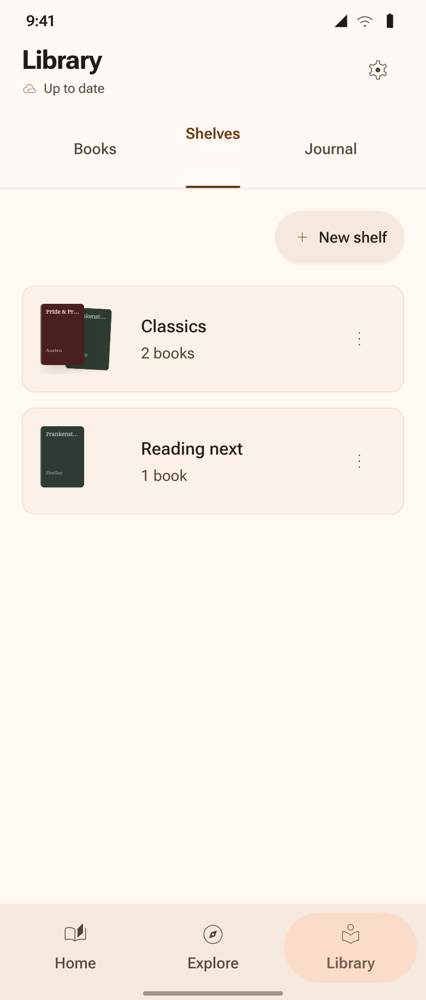
UI-06 Library - Shelves - Veritalex light · MOBILE
UI-07 Library - Journal - Veritalex light · MOBILE
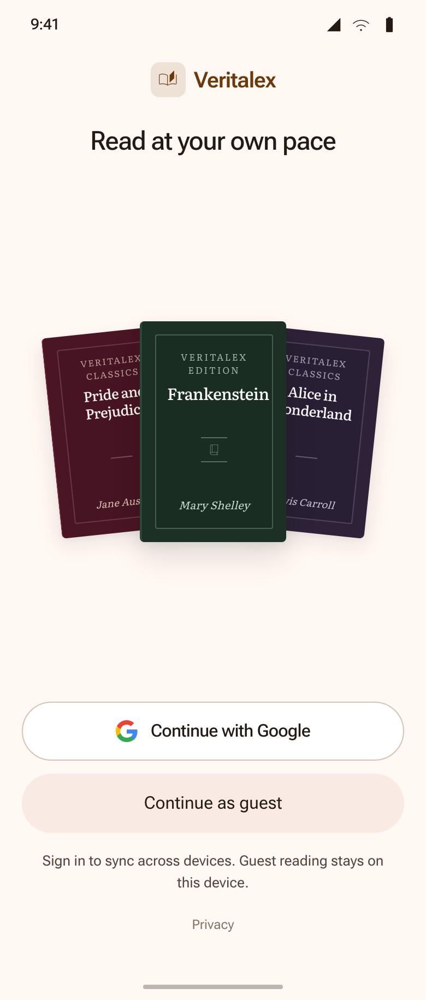
UI-08 Welcome & Account Entry - Veritalex light · MOBILE
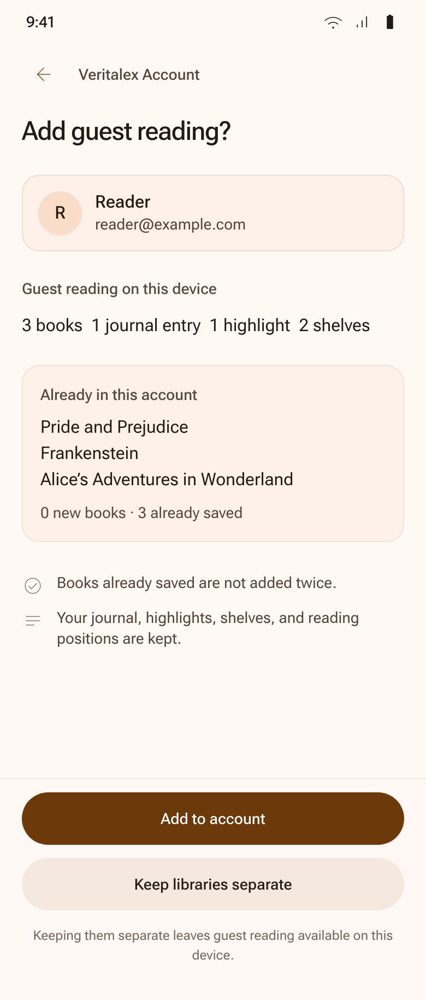
UI-09 Bring your library with you - Veritalex light · MOBILE
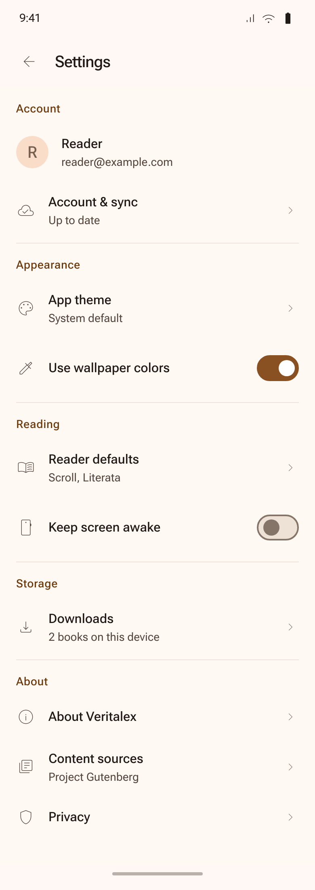
UI-10 Settings - Veritalex light · MOBILE
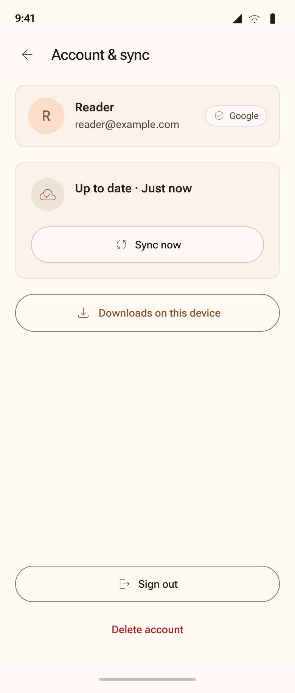
UI-11 Account & sync - Veritalex light · MOBILE
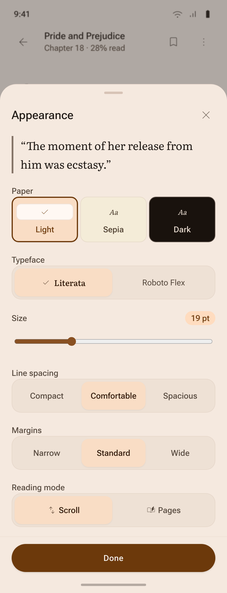
UI-12 Reader appearance - Veritalex light · MOBILE
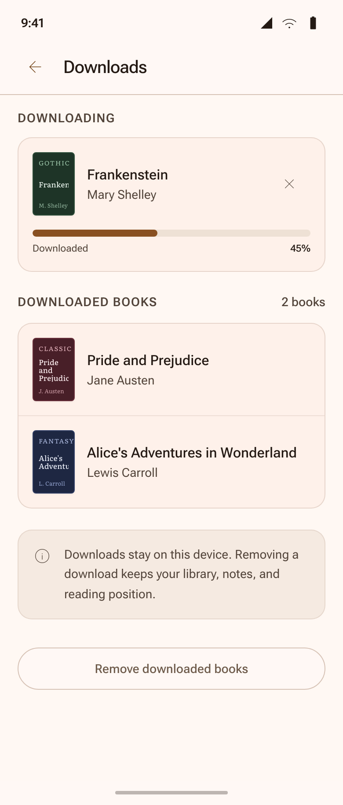
UI-13 Downloads & storage - Veritalex light · MOBILE
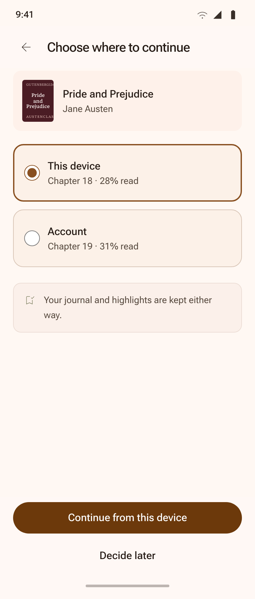
UI-14 Choose where to continue - Veritalex light · MOBILE
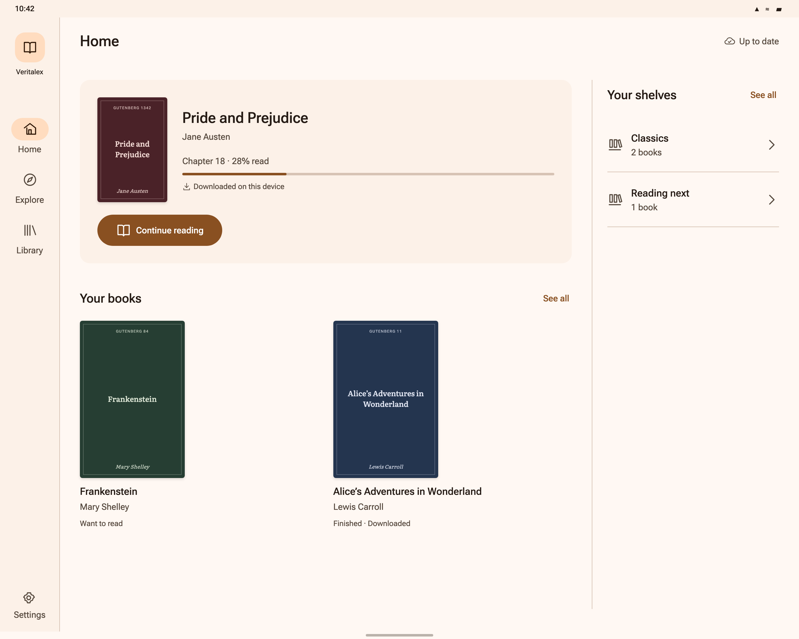
TAB-01 Home - Veritalex (Tablet) tablet · DESKTOP
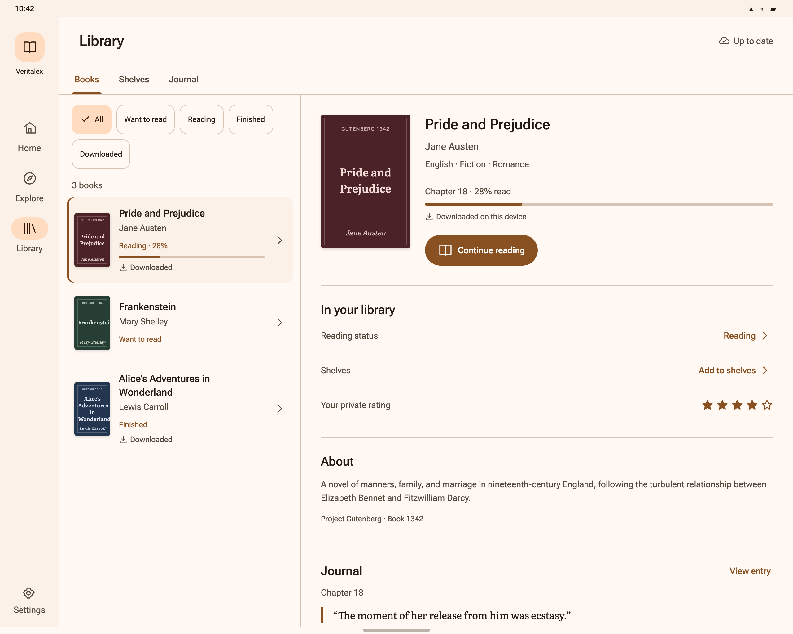
TAB-02 Library and book detail - Veritalex tablet · DESKTOP
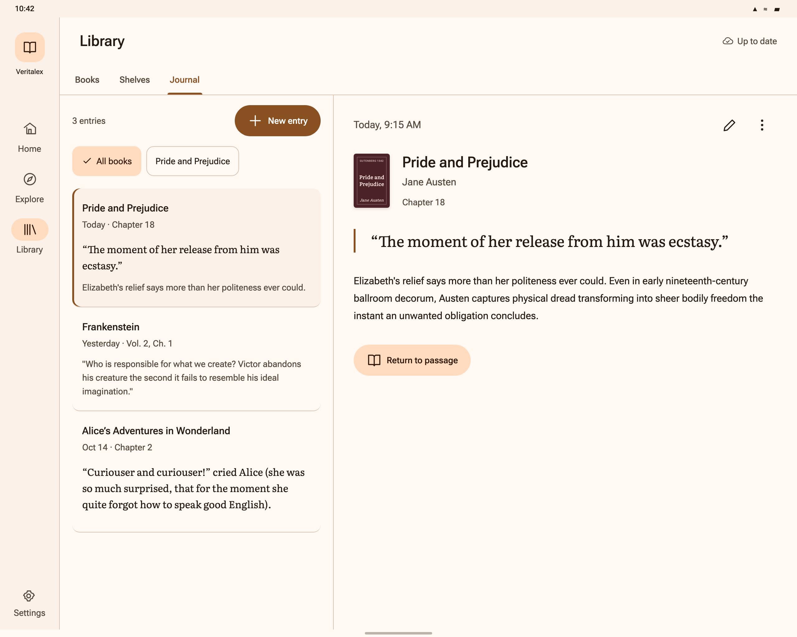
TAB-03 Journal list and entry detail - Veritalex tablet · DESKTOP
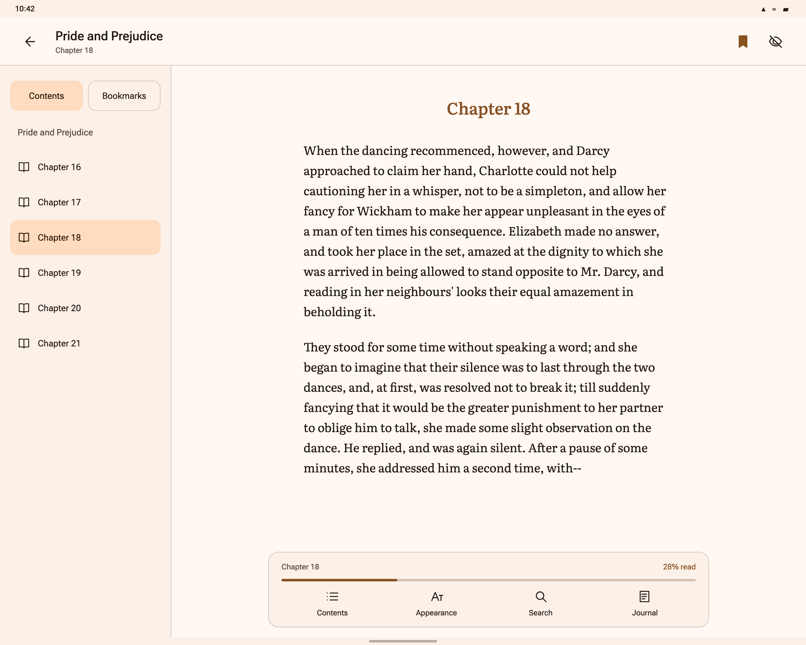
TAB-04 Reader with Contents - Veritalex tablet · TABLET
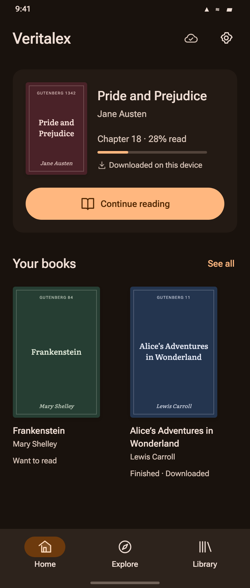
NIGHT-01 Home - Veritalex dark · MOBILE
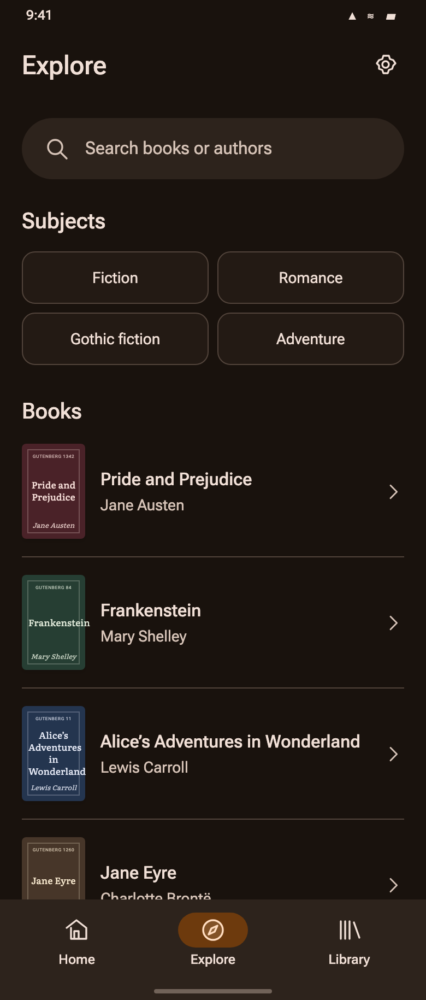
NIGHT-02 Explore - Veritalex dark · MOBILE
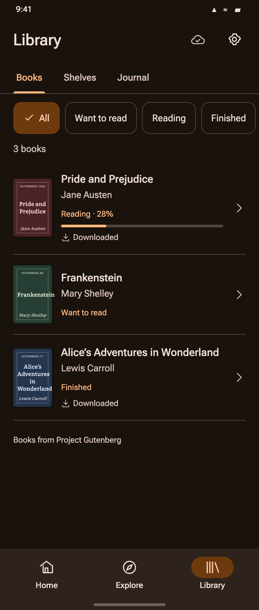
NIGHT-03 Library - Veritalex dark · MOBILE
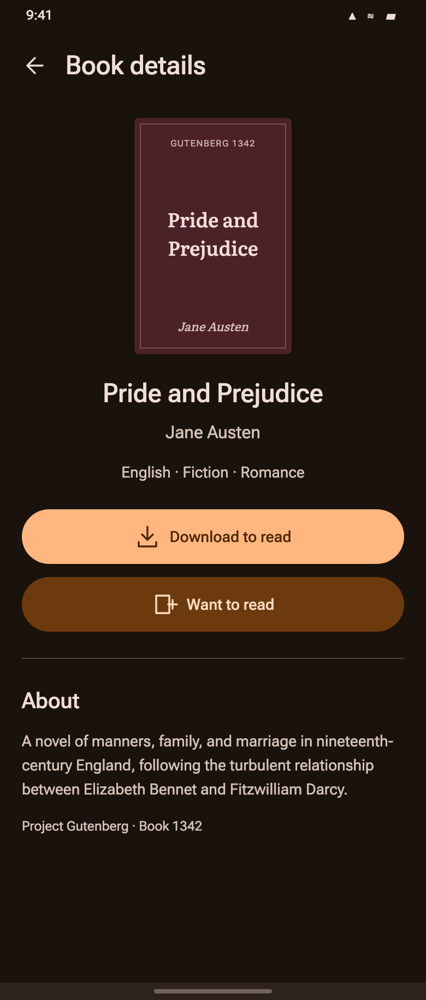
NIGHT-04 Book details - Veritalex dark · MOBILE
NIGHT-05 Reader - Veritalex dark · MOBILE
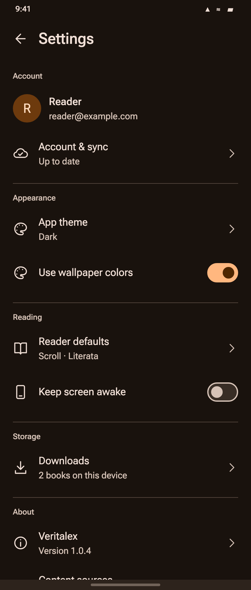
NIGHT-06 Settings - Veritalex dark · MOBILE
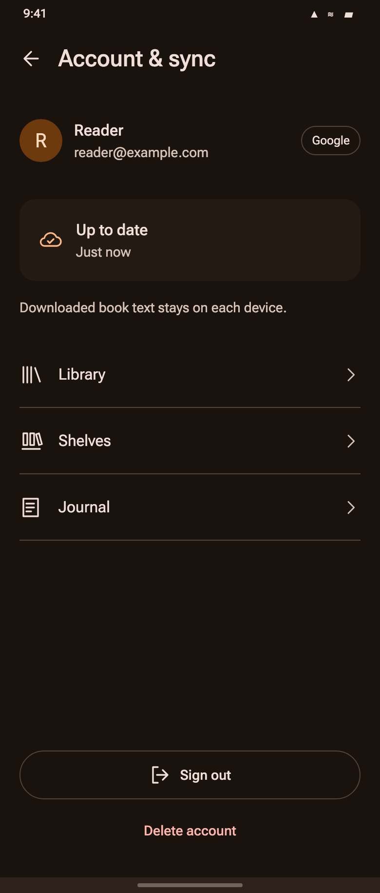
NIGHT-07 Account & sync - Veritalex dark · MOBILE
Related wireframe boards Each board contains 6–8 complete phone frames, with numbered transitions outside the app. All CSS and SVG icons are inline for upload.
Optional sign-in and guest import 7 phone states · 01-auth-import Home, discovery and selecting books 8 phone states · 02-discovery Recoverable catalogue and book access 7 phone states · 03-book-access Offline reading and Library 7 phone states · 04-library Library actions and personal shelves 8 phone states · 05-organize Shelf lifecycle and first journal 8 phone states · 06-shelves Personal journal and passage references 8 phone states · 07-journal Reading, selection and appearance 7 phone states · 08-reader Reading tools, journal context and preferences 8 phone states · 09-reading-settings Device settings and account decisions 8 phone states · 10-settings-account Account lifecycle and saved local data 6 phone states · 11-account-recovery Factual sync and reading position conflicts 6 phone states · 12-sync